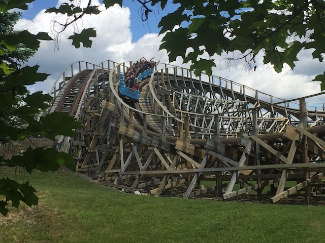
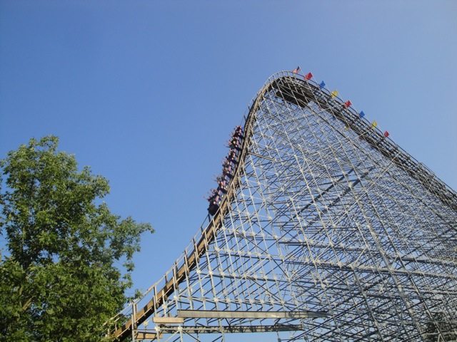
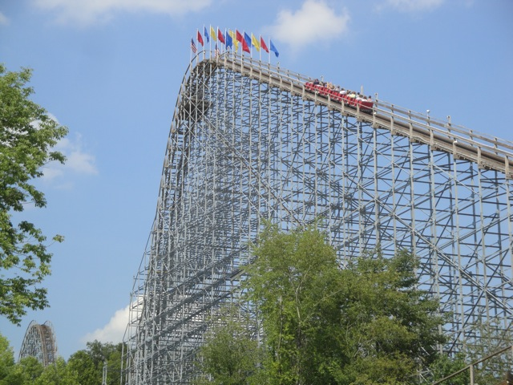
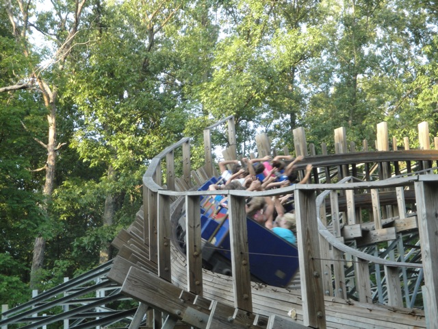
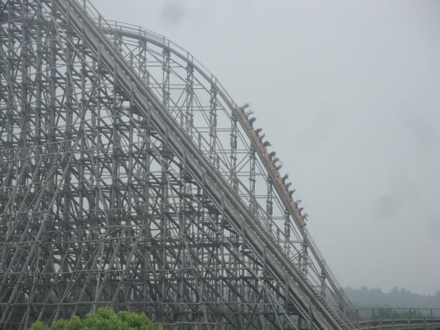
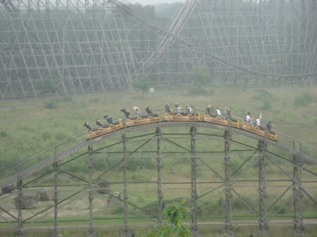
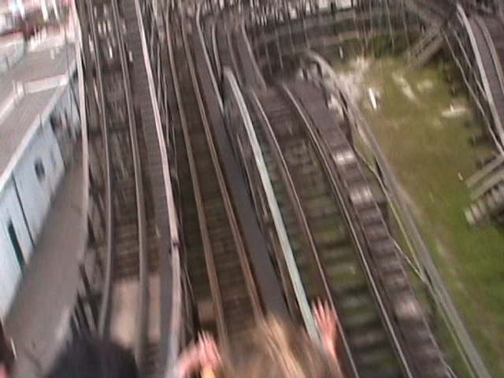
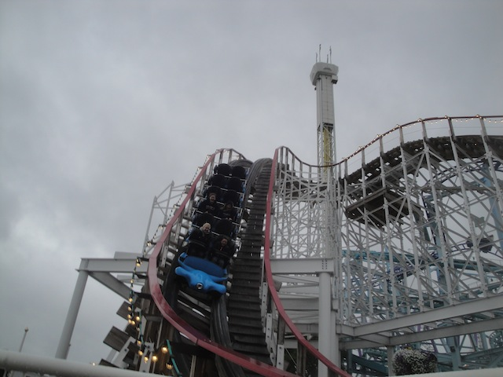

| |
Top 10 Wooden Coasters

Welcome to an Incrediblecoasters Top 10 List. When we list stuff, we actually explain why. Wooden Coasters. They have been around for practically forever. The first coasters that were ever built were wooden coasters and those became a huge hit. After the era of Russian Ice Slides, Rollercoasters slowly began to creep into the picture. The oldest roller coaster I know of through my research is Rutschebanen, which opened at Tivoli Gardens in Copenhagen, Denmark in 1843 (No, not the Rutschebanen still running at Tivoli Gardens. A different ride). It however, did not last too long and was demolished in 1887. However, two years later, the Scenic Railway opened up at Coney Island and then, wooden roller coasters exploded. While at first, they were all small and puny like the Scenic Railway, they began to grow and soon, we got full sized classic wooden coasters. Hell, some of these rides are still with us up to this very day, and actually kick ass, as pictured right below us.

However, since steel coasters came in, they have been the star attraction at many parks, with the majority of the roller coasters in the world being steel coasters. When the general public thinks of wooden coasters, they know these facts and will usually say stuff like "Holy Sh*t! I can't believe they still make wooden coasters!" or "Was this the first rollercoaster ever built?" However, despite the popularity of steel coasters and the general public's attitude on wooden coasters, woodies are continuing to thrive to this very day. Big name companies like Great Coasters International, the Gravity Group, and especially Rocky Mountain Coasters are redefining the way we think of wooden roller coasters by adding in all sorts of crazy elements such as many twisty bits, 90 degree turns, and all sorts of special effects. Hell, Intamin has taken up wooden coasters and defined them by actually cutting the wood in a factory and using special wood to give a smooth ride and allows for wooden coasters to really crazy things and still be glass smooth. I've ridden 3 of the 4 Intamin Woodies, and they're all on this list. So that definetly says something good about them. Wooden Coasters come in all diffrent sizes. Ranging from cute kiddy coasters, to old timers, to classic out and backs, to twisty GCIs. But which ones are the best? Which wooden coasters can provide you with the wildest and craziest ride? Well, I haven't ridden every wooden coaster in the world, so I can't answer that. I have however, been on a lot of wooden coasters and can tell you what the best woodies are out of all the one's I've ridden. So sit back and take a look at some of these creations that I am certain that any tree would be honored to have died for a cause as great as these woodies. These are the Top 10 Wooden Coasters.
 
We also have a Top 10 Wooden Coasters Video. However, the video is outdated as a couple of the rides got bumped off the list and replaced with better wooden coasters. But it still showcases most of the coasters on this list, as well as showing other great wooden coasters. Don't worry. We'll remake our Top 10 Wooden Coasters video soon enough.
#10.
Comet @
Great Escape
Lake George, New York, U.S.A
Comet has a very intersting history. It first opened up as the Crystal Beach Cyclone at Crystal Beach. Now apparently, the Crystal Beach Cyclone was apparently the most intenese roller coaster ever. Personally, it just sounds like the big overrated coaster of the 20s, a sort of retro Millenium Force, or Kingda Ka, or Beast. However, it then turned into the Crystal Beach Comet which was later moved to the Great Escape in the 90s. All I have to say is Thank you Great Escape for saving this ride as it really kicks ass. It kicks ass big time. With it's double out and back layout, Comet will leave you breathless the entire ride. The turns on this ride are more like the turns on a wild mouse and some of the airtime on this is pretty damn extreme. While the rest of the Great Escape isn't too great with mostly standard or mediocre rides, Comet is a fantastic ride that fits in beautifully with this park. Comet. It's more beautiful than anything the Kupiper Belt could ever produce.
 
#9.

Voyage @
Holiday World
Santa Claus, Indiana, U.S.A
Located at Holiday World, the Voyage has been thrilling people since 2006 and has been voted the #1 coaster ever since. Just about everyone loves this ride. And it's not that hard to see why. The ride is big, long, fast, and intense. Its got 90 degree turns and throws you you around for a wild ride. Now when I last rode the ride, it was a brutal ride. There was plenty of jackhammering and shuffling. But don't worry. Holiday World takes very good care of this ride and it should stay tolerable. If not...well, there's Topper Track from Rocky Mountain Coasters. I know the Timberliners failed. So hopefully that'll work. And to make this ride even better, if you thought this craziness only lasted a little while, you're mistaken. Voyage is one of the longest coasters in the world and while I don't know how long a ride is, I just know that it's a while for a rollercoaster. Voyage. It's far crazier than the Pilgrims could've ever experienced.

#8.

Collosus @
Heide Park
Soltau, Lower Saxony, Germany
This ride is one of the four Intamin Woodies of the world, and man is it freaking awesome. I mean, just look at it! It's the fifth biggest wooden coaster in the world, and it has everything you want on a wooden coaster. Speed, smoothness, and a sh*tload of airtime. Holy Crap! This thing is an airtime machine! You just get ejected over those airtime hills. Hill, after hill, after hill. Just pure airtime. And it doesn't slow down for a second. It just roars through all these hills, some of them massive. Much bigger than some of the coasters on this list. And its smooth as glass. Yeah, there may be a wee vibration here or there, but keep in mind that this is a wooden coaster over 10 years old. That is impressive. What more do I need to say? Great speed, great airtime, great reliability, great park, great ride. Collosus, having a collosol impact on wooden coasters around the world.

#7.
Boulderdash @
Lake Compounce
Bristol, Conneticuit, U.S.A
If you're looking at pictures of Boulderdash, there's not much to see. Most of the ride is hidden away in the forests of Conneticuit. And that alone makes the ride badass. I mean, the location of this ride doesn't even seem like an amusement park. It feels more like a cliff jumping spot. Seriously, I keep expecting something like the Cascade Ponds to simply flash by on the ride. And for all I know, maybe that really did happen. I was too busy enjoying the madness to notice, or care. However, unlike the Beast, another highly rated wooden coaster in an awesome location, this ride actually does crazy stuff and would still kick ass not in the forest. I mean, this ride is lightning fast, has rib smashing laterals, and some of the most extreme airtime ever. Oh, and if you're riding it at night, HOLY SH*T!!! I envy you so much you lucky bastards!! Boulderdash, hidden in nature, this gem shines through and truely shows its awesomeness.

#6.

Coaster @
PNE Playland
Vancouver, British Columbia, Canada
Many coaster enthusiasts have never even heard of Coaster. To them, this is just a puny little wooden coaster in a ghetto looking crappy park in the middle of Vancouver, where there are no other amusement parks near by. So why go there? 2 reasons. Vancouver kicks ass, and Coaster kicks even more ass. This ride is seriously f*cking amazing. It has some of the craziest ejector air out of any roller coaster. This isn't kids stuff here. We're talking full blown Phoinex status ejector air. Oh, and strong laterals while we're at it. Now to be fair, Coaster isn't underrated as everyone who has been on it gives it the very high reviews this ride deserves. It's just underriden as PNE Playland isn't exactly a roller coaster enthusiast destination. Well the park itself may not be that great, but Coaster is, and as one of the best wooden coasters ever, it should be on every enthusiasts to do list. Coaster. It's so amazing that you don't even care that it's got a bland and boring name! =)

#5.

Phoinex @
Knoebels
Elysberg, Pennsylvania, U.S.A
Phoinex, like many other wooden coasters, has an interesting history. It first opened up as the Rocket in Playland, Texas. But then the park closed. A couple years later, Dick Knoebel of Knoebels said "We want to rebuild Rocket here at Knoebels." Then the guys at Playland said "You can't relocate a wooden coaster! It's impossible!!" Then Dick Knoebel said "Sure I can!!! Just watch." Then he relocated the ride to Knoebels and it lives on and thrills people today. However, while it may have an interesting history, it provides a far better ride. This ride has airtime, laterals, positive Gs, smiles, laughter, and smelly tunnels. Everything you could possibly want on a wooden coaster. The airtime on this is some of the best. This ride has standing up out of your seat airtime!! And that always leads for a top 10 coaster. It's a great coaster in a great park. Phoinex. It's just plain badass.
 
#4.

Balder @
Liseberg
Gothenberg, Bohuslän, Sweden
Yep, it's another one of the amazing Intamin Wooden Wooden Coasters. And I'm not exxagerating when I say that these are the best wooden coasters on the planet. They're all just absolute airtime machines. I mean, Balder may not look nearly as intense as the other Intamin Wooden Woodies, but don't underestimate this ride. It's got airtime galore and it's not afraid to eject you out of your seat. Once you go down that first drop, there's just no stopping. It's essentially nothing but airtime hill after airtime hill after airtime hill. And Balder has quite a nice mix of airtime. Ejector air, Floater air, Extreme air, Sustained air, it's all here, and man is it all good. Balder does have a nice variety, featuring some laterals as well as a nice sense of speed. But really, this ride is all about the airtime. There's a reason people keep raving on about this ride. It's freaking awesome!!! So get your ass over to Sweden and get on this thing. Balder. It's so good that you barely recognize all the other amazing attractions at Liseberg.
 
#3.

Lightning Rod @
Dollywood
Pigeon Forge, Tennessee, U.S.A
Yeah. You knew this was coming. It's one of the most popular and best wooden coasters on the planet. And...yeah. Lightning Rod kicks ass!!! I mean, it's an RMC Woodie. So naturally, it's gonna be freaking sweet. However, this isn't quite like the other RMC Woodies. Woodies have done inversions now. But what has a wooden coaster not done? Oh, I know. LAUNCH!!! Yep. This is currently the only launched wooden coaster. It launches up the hill, and then hauls ass down a crazy first drop. So...yeah. It's not the best launch ever, but....it's a LAUNCHED WOODEN COASTER!!! That is just f*cking awesome! But novelty aside, Lightning Rod may not have any inversions, but what it has instead is AIRTIME!!! Sideways airtime to be exact. Yeah. This ride is essentially the KING of sideways airtime. You know those airtime hills where you're banked 90 degrees, but then you get ejector air, Lightning Rod is FULL of those. And considering how the entire ride is on a hill outside the park, it's just full of craziness, doging trees through the woods, and doing all sorts of crazy banked elements. And that quad-down at the end....*drool* SO GOOD!!! Lightning Rod. It's LIGHTNING fast and CRAZY GOOD!!! =)
 
#2.

Outlaw Run @
Silver Dollar City
Branson, Missouri, U.S.A
Yep. Outlaw Run is another one of those RMC Wooden Coasters. And yeah. It's a crazy ride. I know people generally prefer Lightning Rod to Outlaw Run, so I'm going aginst the grain here (though both are still amazing rides). Its got a damn near vertical drop at 81 degrees, all sorts of beyond 90 degree bankings, and the double barrel roll at the end. So its got all sorts of eye candy to make it look insane. And it is. Its F*CKING INSANE!!!! Luckily, these record shattering elements really blend in with the ride beautifully and truely make it a much more insane experience. The sharp transitions and overbanked turns combinded with the high speeds make this ride truely out of control. Those barrel rolls at the end are not only amazingly fun and dizzying, but they feel completely natural and not in the least bit gimmicky. And lets not forget the airtime. Outlaw Run still does have some great ejector air. Some of it is even taken completely sideways. Mmm. Sideways Airtime *drool*. Outlaw Run. This ride is so awesome that they even interviewed us to talk about how awesome it is. =)
 
#1.
El Toro @
Six Flags Great Adventure
Jackson, New Jersey, U.S.A
This ride is so f*cking awesome, that it's pointless to use words to describe it, but I will anyways because it'll make things a lot easier. Well first off, you just look at El Toro, and you can see that this is a monster of a wooden coaster. I mean this thing is so huge that it takes dumps the size of Coaster, which while it's also one of the best wooden coasters ever, doesn't even compare to El Toro. And all the stuff in Spots 10-8 don't even show up on the radar (I'm amazed that Rolling Thunder lasted as long as it did next to El Toro. At least I got that credit before it rightfully got demolished). All right, expectations are set high for El Toro. You didn't set the bar high enough. Along with having some truely extreme ejector that just gets crazier and crazier as demonstrated in the Rolling Thunder Hill, but this thing also has Maverick style turns, roaring fast speeds, and top of all that, is as smooth as glass. El Toro. It will rape you, and you will enjoy it.

So now I'm sure you know what you're thinking. "Wow. That was the list. That is so wrong." Well no. This is just the current list. I haven't been on every wooden coaster in the world, so until I do, this list is innacurate for a world wide description. There are still many many great wooden coasters out in the world that would instantly make this list. And even when I do ride all of them, rides will deteriorate, go bad, and new ones will be built, so no list will ever last forever. But still, this list does pay tribute to 10 fantastic wooden coasters that every roller coaster enthusiast should ride in their lifetime. And if you could tell, most of the rides on this list had similar qualities which appealed to my taste in wooden coasters. However, wooden coasters can come in many different styles and tastes for all sorts of people, enthusiasts or not, who have different tastes in woodies. There are still many other great woodies out there not on this list. Ones that I have ridden and know about and simply didn't make the cut, and ones that I haven't ridden yet and are just waiting to get into the Incrediblecoasters System. Either way, go out and ride a wooden coaster today. They really are a fun type of coaster.

|